|
Lunar Letter
Overview
In the myth in Kaldia, it is the earliest letters. In the real world, it is the letters used in Old Arka.
Some of Lunar letters are still used in Arka.
You can download the font of Lunar letter here.
Non-shifted
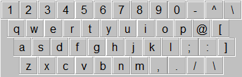
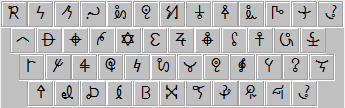
Shifted
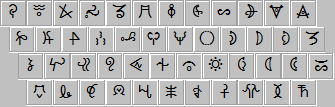
Moons
Moons are the names of menbers of Axet which faught against demons in the myth. Moons are used for calendar and so on.
The 1st row is the Lunar letter. The 2nd row is the name of the moon (a member of axet). The 3rd row is the abbreviated name of the moon.
You can read about Mel calendar here.
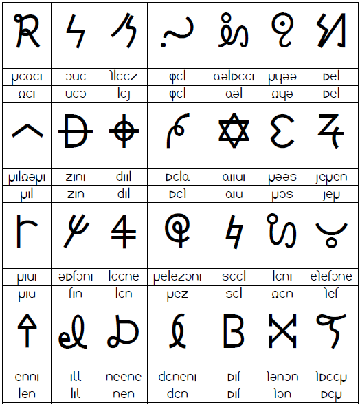
Week Demons
Letters for week and 7 elements.
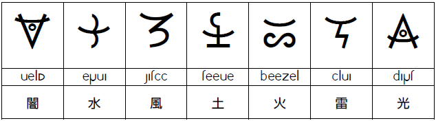
velm: darkness
erva: water
satii: wind
teeve: earth
beezel: fire
ilva: thunder
part: light
Myuxet
Letters for the 14th month and its days.
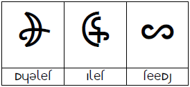
Armiva
Letters of ancient 12 gods. The 1st row is their name. The 2nd row is their abbreviated name.
They are used for watch. The 3rd row is clock time.
You can express bearings. cf. konoote means north.
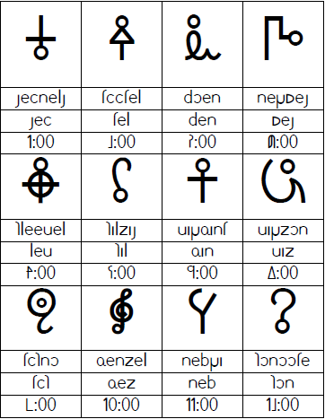
Lunar Phase
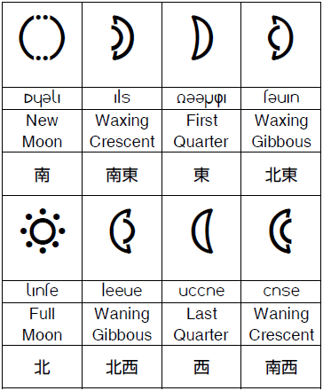
Season
Spring, summer, autumn and winter.
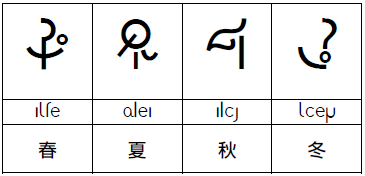
Gods
Arte (the greatest god), haizen (the god of punishment), alies (the gods of sky and ground), selest (the gods of death)
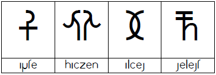
Family Name and Kalkovel
1st row; family name of the moons.
2nd row; kalkovel.
3rd row; chief country of kalkovel.
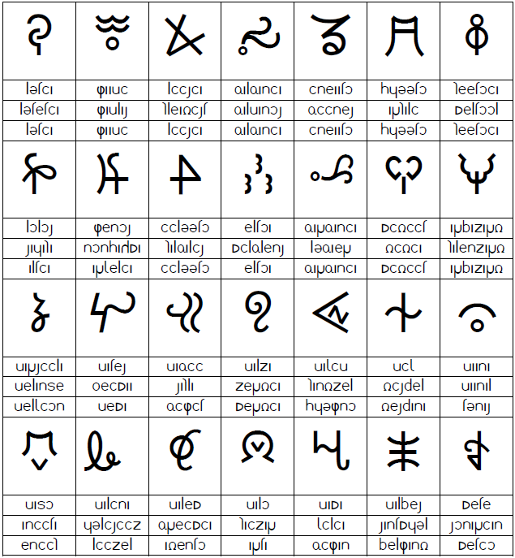
|